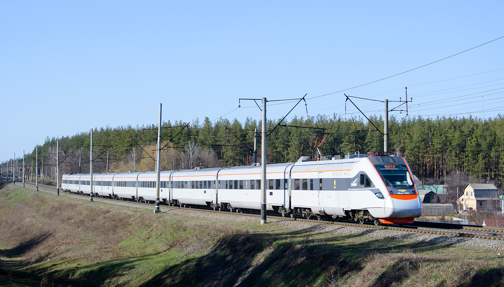
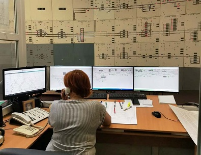

Залізни́чний тра́нспорт (залізни́ця) — вид рейкового транспорту, що здійснює перевезення пасажирів та вантажів в колісних екіпажах, що рухаються залізничною колією. Залізничний транспорт є галуззю промисловості, частиною транспортної мережі логістичних ланцюгів, які сприяють міжнародній торгівлі і економічному зростанню. У загальному сенсі залізничний транспорт складає світову залізничну мережу.
- Які головні складові залізничного транспорту?
- матеріальна (власне залізниця), що ділиться на:
- інфраструктуру: залізнична колія і штучні споруди (мости, тунелі, вокзали, станції, депо), пристрої сигналізації, централізації і блокування (СЦБ), контактна мережа (прилади електропостачання, тягові підстанції)
- рухомий склад: тяговий (локомотиви) і не тяговий (вагони) — вантажні і пасажирські
- експлуатаційна, що в свою чергу ділиться на:
- технічну експлуатацію — диспетчерське керування, розробка оптимальних способів керування процесом перевезень;
- комерційну експлуатацію — відносини з вантажовідправниками / вантажоотримувачами / вантажовласниками і пасажирами. 
- Головними складовими залізничного транспорту є:
- Яка ж історія виникнення залізничного транспорту?
За принципом залізниці був збудований у VI ст. до н. е. волок (діолк) у місті Коринф[1]. У XVII столітті була збудована Воллатонська вагонна дорога, що вважається першою залізницею в світі. Працювала вона на кінній тязі. У XIX столітті в містах за цим же принципом була влаштована конка, що стала попередницею трамваю. Англійські інженери Джеймс Ватт і Джордж Стефенсон у 1825 році побудували першу залізницю, по якій ходили паровози зі Стоктона в Дарлінгтон. Після цього почалося інтенсивне будівництво залізниць в Англії, континентальній Європі та Північній Америці, як заощадливого і швидкого виду транспорту та зв'язку. Після Другої світової війни паровози були замінені електровозами і тепловозами. У той же час розвивалися інші види транспорту: автомобільний, повітряний, водний, і залізниці перестали бути основним способом пересування на великі відстані. З 1970-х років почалося інвестування у швидкісні залізничні системи. В Англії почав експлуатуватися високошвидкісний дизельний локомотив, спеціальні лінії були побудовані в Японії і Франції. У багатьох країнах довжина залізничної мережі скорочується. Так, у США колись було понад 400 000 км залізничного полотна.
Детальніше про історію виникнення залізночного транспорту- Чи є безпечним залізничний транспорт?
Залізничний транспорт є значно безпечнішим (в кілька разів) у порівнянні з авіа, автомобільним і морським транспортом.[2] Аварія на вокзалі Монпарнас, Париж, 1895. Першою людиною, що загинула під потягом був депутат англійського парламенту Вільям Гаскіссон. Він перебував на відкритті першої залізничної дороги Ліверпуль — Манчестер, хоча за настановою лікаря бути він там не мав. Того дня він вийшов прямо на колію, щоб привітатися з герцогом Веллінґтоном, одначе не помітив поїзда, що рухався в кількох метрах від нього. Поїзд їхав досить повільно (перші паротяги набирали швидкість не більше 27 км/год), одначе Гаскіссон впав у паніку і не встиг відійти вбік. Паротяг наїхав на нього й переламав англійцю ноги, а за кілька годин той помер у лікарні.
Диспетчер залізничного транспорту
Поїзний диспе́тчер (ДНЦ) — змінний працівник, який одноособово керує рухом поїздів на підпорядкованій йому залізничній ділянці[1].
- Які ж обов'язки диспетчера?
Забезпечує виконання графіка руху і плану формування поїздів, завдань з середньодобової продуктивності і пробігу локомотивів, направлення вагонопотоків. Контролює роботу диспетчерів та чергових дирекції залізничних перевезень, залізничної станції, локомотивного депо з організації пересувань на диспетчерських дільницях поїздів підвищеної ваги та довжини, з негабаритними вантажами, спеціального рухомого складу, заново побудованих локомотивів та тих, що прямують в ремонт та з ремонту; своєчасне і якісне виконання планів поїзної, вантажної роботи, графіків руху поїздів та змінно-добових завдань з маневрової роботи та вантажно-розвантажувальних робіт, режим роботи обладнання та пристроїв.
Регулює парк локомотивів, який експлуатується, з урахуванням його ефективного і раціонального використання. Забезпечує виконання норм утримання робочого парку вагонів та правильний їх облік, рівномірне розташування вантажних та порожніх вагонів, своєчасне розвезення місцевого вантажу. Контролює організацію навантаження і формування маршрутів. Перевіряє забезпеченість районів та дільниць технікою, вантажно-розвантажувальними засобами, пристроями. Здійснює оперативний контроль за режимом роботи локомотивних бригад, виконанням графіка всіх видів ремонту. Вживає оперативних заходів до організації аварійно-відновних робіт та контролює їх виконання.
Веде книгу наказів, графік вантажної роботи, диспетчерський журнал, отримує дані про режим роботи обладнання та пристроїв, складає звіт про роботу підрозділу, аналізує підсумки роботи і розробляє пропозиції щодо усунення недоліків. Планує та оперативно керує експлуатаційною роботою на полігоні залізниці, що обслуговується, відповідно до технічного плану, завдань Укрзалізниці та залізниці. Забезпечує виконання добового плану поїзної та вантажної роботи.
Контролює виконання графіка руху поїздів, плану формування, розвезення місцевого вантажу, здавання порожніх вагонів згідно з регулювальним завданням; введення в графік пасажирських поїздів, що запізнюються, просування поїздів, що прямують за особливими умовами; обмін поїздів і локомотивів; передавання місцевого вантажу і порожніх вагонів на стикових пунктах сусідніх залізниць.
Контролює виконання плану навантаження важливих вантажів. Контролює дотриманням встановлених норм якісних показників використання вагонів і локомотивів, робочого часу локомотивних бригад. Аналізує оперативну обстановку та підсумки виконання плану експлуатаційної роботи полігону, доповідає керівництву про підсумки роботи зміни. Контролює виконання наказів, розпоряджень Укрзалізниці, залізниці, своєчасне та точне передавання інформації щодо поїздів та роботи станцій.

- Що повинен знати диспетчер?
Правила технічної експлуатації залізниць України ; Інструкцію з руху поїздів і маневрової роботи на залізницях України; Інструкцію з сигналізації на залізницях; Правила безпеки та порядок ліквідації наслідків аварійних ситуацій з небезпечними вантажами при перевезенні їх залізничним транспортом; Інструкцію з забезпечення безпеки руху під час виконання колійних робіт; Інструкцію з забезпечення безпеки руху поїздів під час виконання робіт з технічного обслуговування і ремонту пристроїв сигналізації, централізації, блокування (СЦБ); накази, розпорядження та вказівки Укрзалізниці, управлінь залізниць; методичні, нормативні та інші керівні матеріали з організації руху поїздів; технічну та експлуатаційну характеристику дирекції залізничних перевезень та великих станцій, технологію їх роботи; графік руху і план формування поїздів, порядок прямування вагонопотоків; правила перевезення вантажів, порядок роботи на ПЕОМ; показники і технічні норми експлуатаційної роботи; схеми, профіль колій, технічно-розпорядні акти, технологічні процеси роботи станцій дільниці; правила і норми з охорони праці та виробничої санітарії; основи трудового законодавства; Положення про дисципліну працівників залізничного транспорту ; положення про робочий час і час відпочинку працівників залізничного транспорту.